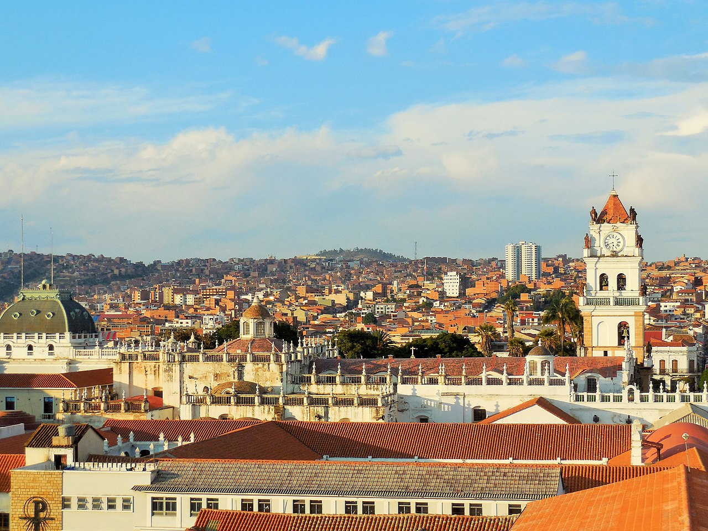

Mi Ciudad
Sucre

Sucre4 o también La Ilustre y Heroica Ciudad de Sucre, es la capital oficial de Bolivia.56nota 1 Es además la sede del Poder Judicial del país e igualmente es capital del departamento de Chuquisaca. La ciudad ha sido designada Patrimonio de la Humanidad por la Unesco en 1991.7 Según datos del censo INE 2012, el municipio de Sucre cuenta con una población de 261 201 habitantes. Además de ser la segunda ciudad capital más alta del mundo después de Quito.